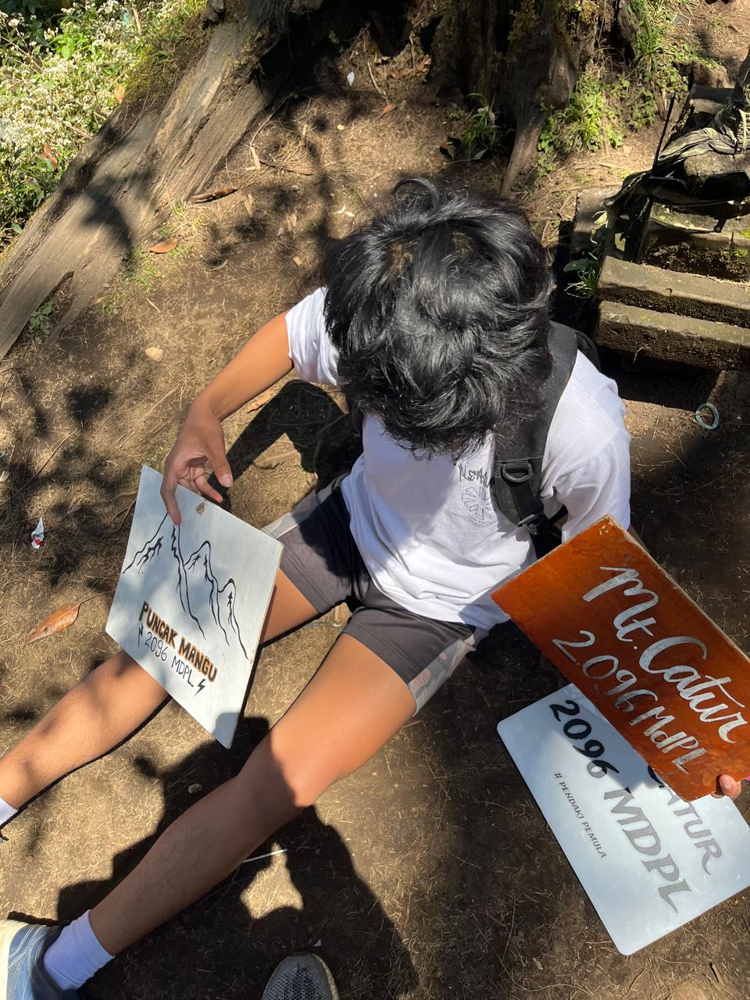
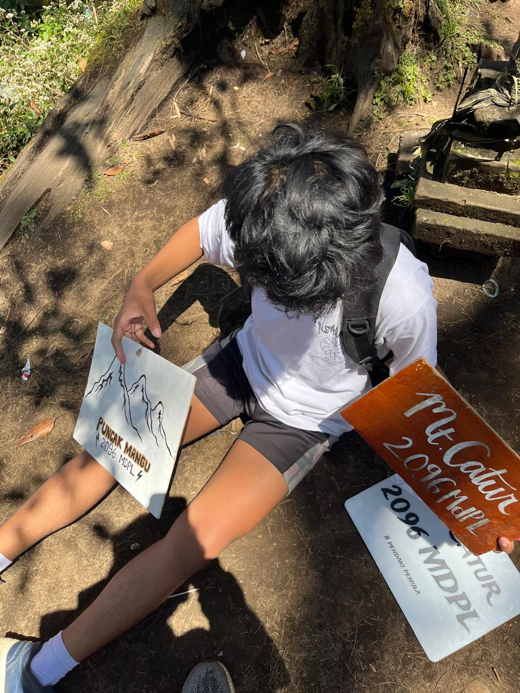

MOUNT CATUR
 

Tentang Gunung Catur
Gunung Catur adalah salah satu gunung berapi yang terletak di Pulau Bali, Indonesia, tepatnya di kawasan Bedugul, Kabupaten Tabanan. Gunung ini memiliki ketinggian sekitar 2.096 meter di atas permukaan laut dan merupakan salah satu dari banyak gunung berapi yang masih aktif di Bali. Gunung Catur terkenal dengan pemandangannya yang indah dan udaranya yang sejuk, menjadikannya salah satu destinasi wisata alam yang populer di Bali.
Gunung Catur memiliki beberapa puncak, dan salah satu yang terkenal adalah Puncak Mangu. Pendakian ke puncak Gunung Catur relatif lebih mudah dibandingkan dengan beberapa gunung lainnya di Bali. Dengan waktu pendakian sekitar 2-3 jam, para pendaki dapat menikmati pemandangan hutan tropis yang lebat, serta panorama Bali yang menakjubkan dari puncaknya. Pendakian ini juga cocok bagi para pendaki pemula yang ingin menikmati pengalaman mendaki gunung dengan pemandangan indah tanpa harus terlalu sulit.